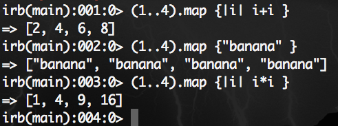

DBC Week 4 Technical Blog Post
Ruby Enumerable methods
February 28, 2015
In Ruby, an enumerator is a class that allows for both internal and external iteration. They can be created by the following methods:
- Kernel#to_enum
- Kernel#enum_for
- ::new
Enumerables, by itself, contribute a lot to Ruby's ease-of-use and flexibility. They are possible in Ruby due to the notion of "mixins." If you want to write code once and share it between a bunch of unrelated classes, you can put it in modules to be "mixed in" with your classes.
One useful Ruby Enumerable method is the Enumerable#map. Using #map allows you to return a new array with the results of running block once for every element in enum . If no block is given, an enumerator is returned instead.
This is extremely helpful because it allows you to manipulate a group of elements in Ruby in a clearly defined way.